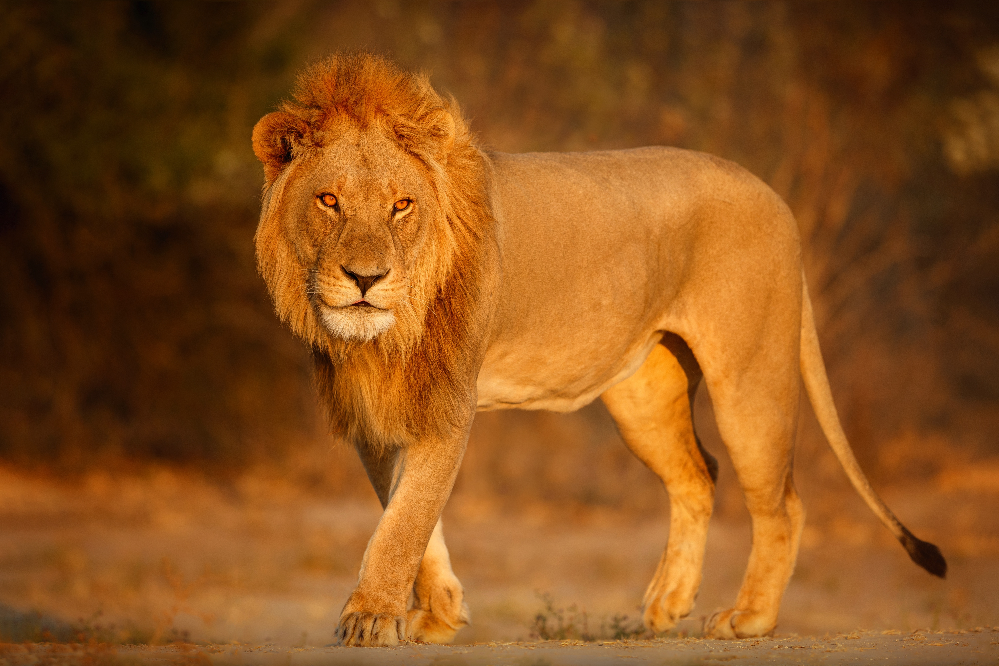
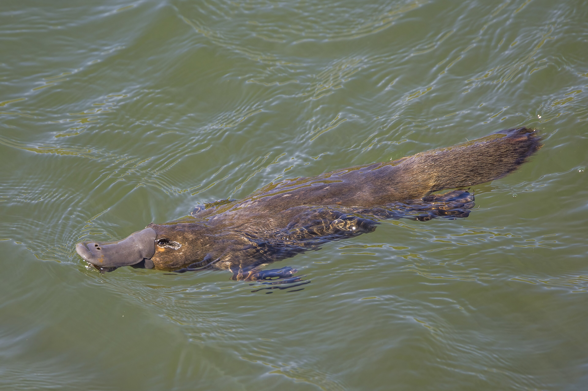

The Great Migration
Migration is one of nature’s most spectacular survival strategies, where animals travel long distances to find better food or a safer place to raise their young. From the tiny Arctic Tern that flies from pole to pole, to the massive Wildebeest herds crossing the African plains, these journeys are often dangerous and require incredible navigation skills. Many animals rely on the Earth's magnetic field, the stars, or even the position of the sun to find their way across thousands of kilometers!
Survival on the Move
Seasonal changes usually trigger these massive movements, forcing animals to leave their homes before the weather becomes too harsh. Whether it is Humpback Whales swimming through entire oceans or Monarch Butterflies fluttering across continents, migration ensures that species can find the resources they need to survive. It is a high-stakes race against time that showcases the endurance and instinct of the animal kingdom!

African Lion

Blue Whale
